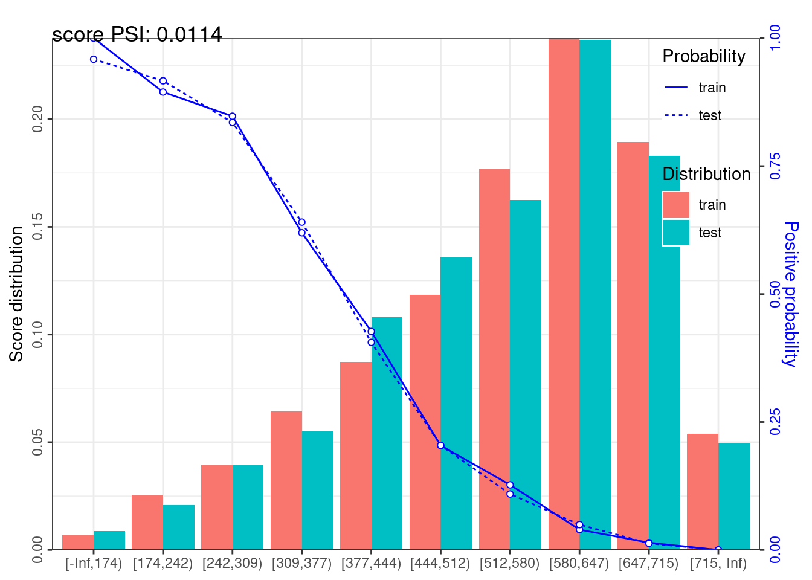
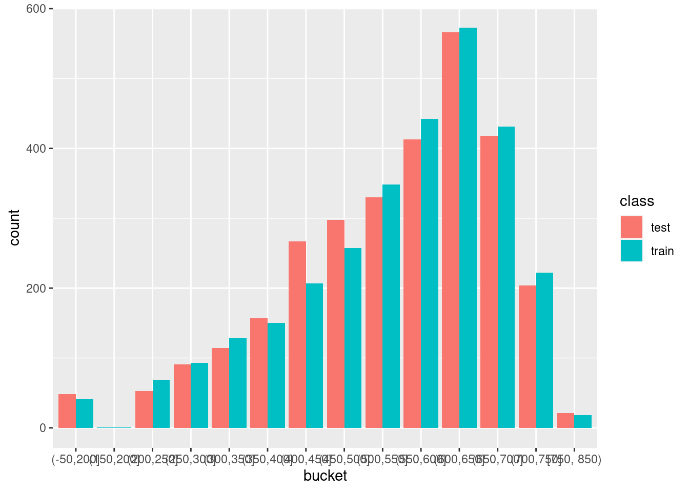

data <- read.csv("http://www.creditriskanalytics.net/uploads/1/9/5/1/19511601/hmeq.csv")
save(data, file = "data/hmeq.rda")29 Credit Scoring
29.1 Score card
Khi xây dựng scorecard, cần chia bucket để dễ dàng hơn trong việc tính điểm
Các định nghĩa quan trọng:
- WOE (Weight of Evidence): Đo lường độ mạnh của việc phân loại good vs. bad giữa một nhóm (VD: age 27-29). Nếu WOE có giá trị âm càng lớn, càng thể hiện khả năng phân nhóm khoản vay xấu.
\[WOE = ln(\frac{Distr\:Good}{Distr\: Bad})\]
- IV (Informatio Value): Đo lường độ mạnh dự báo của biến dự báo với biến cần được dự báo (response). Các đặc tính như sau:
- IV < 0.02: Không có giá trị dự báo
- 0.02 - 0.1: thấp
- 0.1 - 0.3: trung bình
- 0.3 - 0.5: cao
- Trên 0.5: Cần kiểm tra lại
\[IV = \sum_{i = 1}^{n}(Distr\:Good - Distr\:Bad)*ln(\frac{Distr\:Good}{Distr\:Bad})\]
Các quy tắc khi xây dựng:
- Mỗi bucket có tối thiểu 5%
- Khi nhóm các biến, cần đảm báo quy tắc WOE sau khi nhóm là tuyến tính (đồng biến hoặc nghịch biến)
Lưu ý: Xem thêm file excel (data/woe-example.xlsx)để hiểu rõ hơn cách tính WOE và IV
29.2 Các bước xây dựng score card
- Bổ sung các thông tin dữ liệu bị thiếu
- Tính toán WOE và IV, loại các biến có IV quá thấp, kiểm tra lại các biến có IV quá cao
- Tạo tập mới là tập
df_woe, các biến đã được nhóm lại để tối ưu hóa WOE - Xây dựng mô hình
logisticđơn giản trên tậpdf_woe - Score dữ liệu mới, việc xây dựng score card cần thực hiện hai việc:
- Xác định odds tại mốc điểm scorecard nhất định
- Xác định điểm score card giúp tăng gấp đôi odds
29.3 Các tính score
- Điểm mặc định (
point 0) thường được dùng là 600. Mốc điểm này phản ánh một tỷ lệ odd cho trước (ví dụ: 30) - Điểm tăng gấp đôi odd (
point double ood - pdo): Là số điểm mà cứ tăng thêm pdo, odd sẽ tăng gấp đôi - thường là 20. Xem minh họa dưới đây
| Score | Odd |
|---|---|
| 600 | 30 |
| 601 | 31 |
| … | …. |
| 620 | 60 |
29.4 Xây dựng score card
library(tidyverse)
library(scorecard)
load("data/hmeq.rda")
names(data) <- names(data) %>% tolower
data %>% head bad loan mortdue value reason job yoj derog delinq clage ninq clno
1 1 1100 25860 39025 HomeImp Other 10.5 0 0 94.36667 1 9
2 1 1300 70053 68400 HomeImp Other 7.0 0 2 121.83333 0 14
3 1 1500 13500 16700 HomeImp Other 4.0 0 0 149.46667 1 10
4 1 1500 NA NA NA NA NA NA NA NA
5 0 1700 97800 112000 HomeImp Office 3.0 0 0 93.33333 0 14
6 1 1700 30548 40320 HomeImp Other 9.0 0 0 101.46600 1 8
debtinc
1 NA
2 NA
3 NA
4 NA
5 NA
6 37.11361- Kiểm tra dữ liệu missing
check_na <- function(x) {
(x %>% is.na %>% sum)/length(x)
}
data %>% map_df(check_na)# A tibble: 1 × 13
bad loan mortdue value reason job yoj derog delinq clage ninq
<dbl> <dbl> <dbl> <dbl> <dbl> <dbl> <dbl> <dbl> <dbl> <dbl> <dbl>
1 0 0 0.0869 0.0188 0 0 0.0864 0.119 0.0973 0.0517 0.0856
# ℹ 2 more variables: clno <dbl>, debtinc <dbl>data %>% summary bad loan mortdue value
Min. :0.0000 Min. : 1100 Min. : 2063 Min. : 8000
1st Qu.:0.0000 1st Qu.:11100 1st Qu.: 46276 1st Qu.: 66076
Median :0.0000 Median :16300 Median : 65019 Median : 89236
Mean :0.1995 Mean :18608 Mean : 73761 Mean :101776
3rd Qu.:0.0000 3rd Qu.:23300 3rd Qu.: 91488 3rd Qu.:119824
Max. :1.0000 Max. :89900 Max. :399550 Max. :855909
NA's :518 NA's :112
reason job yoj derog
: 252 : 279 Min. : 0.000 Min. : 0.0000
DebtCon:3928 Mgr : 767 1st Qu.: 3.000 1st Qu.: 0.0000
HomeImp:1780 Office : 948 Median : 7.000 Median : 0.0000
Other :2388 Mean : 8.922 Mean : 0.2546
ProfExe:1276 3rd Qu.:13.000 3rd Qu.: 0.0000
Sales : 109 Max. :41.000 Max. :10.0000
Self : 193 NA's :515 NA's :708
delinq clage ninq clno
Min. : 0.0000 Min. : 0.0 Min. : 0.000 Min. : 0.0
1st Qu.: 0.0000 1st Qu.: 115.1 1st Qu.: 0.000 1st Qu.:15.0
Median : 0.0000 Median : 173.5 Median : 1.000 Median :20.0
Mean : 0.4494 Mean : 179.8 Mean : 1.186 Mean :21.3
3rd Qu.: 0.0000 3rd Qu.: 231.6 3rd Qu.: 2.000 3rd Qu.:26.0
Max. :15.0000 Max. :1168.2 Max. :17.000 Max. :71.0
NA's :580 NA's :308 NA's :510 NA's :222
debtinc
Min. : 0.5245
1st Qu.: 29.1400
Median : 34.8183
Mean : 33.7799
3rd Qu.: 39.0031
Max. :203.3121
NA's :1267 29.4.1 Điền thêm missing value
# Thay NA bằng mean
replace_by_mean <- function(x) {
x[is.na(x)] <- mean(x, na.rm = TRUE)
return(x)
}
# Thay NA bằng category
replace_na_categorical <- function(x) {
x %>%
table() %>%
as.data.frame() %>%
arrange(-Freq) ->> my_df
n_obs <- sum(my_df$Freq)
pop <- my_df$. %>% as.character()
set.seed(129)
x[is.na(x)] <- sample(pop, sum(is.na(x)),
replace = TRUE,
prob = my_df$Freq)
return(x)
}
df <- data %>%
mutate_if(is.factor, as.character) %>%
mutate(reason = case_when(reason == "" ~ NA_character_,
TRUE ~ reason),
job = case_when(job == "" ~ NA_character_,
TRUE ~ job)) %>%
mutate_if(is_character, as.factor) %>%
mutate_if(is.numeric, replace_by_mean) %>%
mutate_if(is.factor, replace_na_categorical)- Phân chia train/test
train <- df %>%
group_by(bad) %>%
sample_frac(0.5) %>%
ungroup()
test <- setdiff(df, train) - Xây dựng WOE
library(scorecard)
bins_var <- woebin(train, y = "bad", no_cores = 1, positive = "bad|1")✔ Binning on 2980 rows and 13 columns in 00:00:04bins_var$derog variable bin count count_distr neg pos posprob woe
1: derog [-Inf,0.2545696877) 2262 0.7590604 1882 380 0.1679929 -0.2094248
2: derog [0.2545696877,1) 341 0.1144295 303 38 0.1114370 -0.6856524
3: derog [1, Inf) 377 0.1265101 201 176 0.4668435 1.2576734
bin_iv total_iv breaks is_special_values
1: 0.03121208 0.3411161 0.2545696877 FALSE
2: 0.04320825 0.3411161 1 FALSE
3: 0.26669579 0.3411161 Inf FALSE# Lọc các biến có woe cao
bins_var$loan %>% select(total_iv) %>% head(1) total_iv
1: 0.1586945# Kiểm tra IV cho tất cả các biến
bins_var %>% map_df(function(df){df %>% select(total_iv) %>% head(1) %>% pull})# A tibble: 1 × 12
loan mortdue value reason job yoj derog delinq clage ninq clno
<dbl> <dbl> <dbl> <dbl> <dbl> <dbl> <dbl> <dbl> <dbl> <dbl> <dbl>
1 0.159 0.0555 0.174 0.00604 0.0833 0.0895 0.341 0.575 0.207 0.107 0.0665
# ℹ 1 more variable: debtinc <dbl># Biểu đồ WOE cho biến
bins_var$loan variable bin count count_distr neg pos posprob woe
1: loan [-Inf,6000) 152 0.05100671 87 65 0.4276316 1.09897343
2: loan [6000,13000) 868 0.29127517 683 185 0.2131336 0.08435525
3: loan [13000,15000) 249 0.08355705 212 37 0.1485944 -0.35517408
4: loan [15000,16000) 190 0.06375839 135 55 0.2894737 0.49255269
5: loan [16000,38000) 1339 0.44932886 1134 205 0.1530993 -0.32000222
6: loan [38000, Inf) 182 0.06107383 135 47 0.2582418 0.33536711
bin_iv total_iv breaks is_special_values
1: 0.080186498 0.1586945 6000 FALSE
2: 0.002125302 0.1586945 13000 FALSE
3: 0.009434160 0.1586945 15000 FALSE
4: 0.017738075 0.1586945 16000 FALSE
5: 0.041649754 0.1586945 38000 FALSE
6: 0.007560693 0.1586945 Inf FALSEp <- woebin_plot(bins_var$derog)
p$derog
Lưu ý: Trong package scorecard, WOE được tính đảo ngược lại, nghĩa là \(WOE = ln(\frac{Distr\:Bad}{Distr\:Good})\). Do đó, với bucket nào có hệ số dương, nhóm đó có xu hướng laf
# Tạo dataframe woe
train_woe <- woebin_ply(train, bins_var)✔ Woe transformating on 2980 rows and 12 columns in 00:00:02# Logistic Regression:
my_logistic <- glm(bad ~ ., family = binomial, data = train_woe)
# Kết quả
my_logistic %>% summary()
Call:
glm(formula = bad ~ ., family = binomial, data = train_woe)
Deviance Residuals:
Min 1Q Median 3Q Max
-2.3874 -0.4542 -0.2655 -0.1434 2.9964
Coefficients:
Estimate Std. Error z value Pr(>|z|)
(Intercept) -1.39388 0.06267 -22.241 < 2e-16 ***
loan_woe 0.55661 0.15662 3.554 0.000379 ***
mortdue_woe 0.45576 0.26473 1.722 0.085139 .
value_woe 0.72577 0.14587 4.975 6.51e-07 ***
reason_woe 1.06208 0.81259 1.307 0.191202
job_woe 0.93845 0.21525 4.360 1.30e-05 ***
yoj_woe 1.05720 0.21329 4.957 7.17e-07 ***
derog_woe 0.67661 0.09936 6.810 9.77e-12 ***
delinq_woe 0.95015 0.07827 12.140 < 2e-16 ***
clage_woe 0.83732 0.13584 6.164 7.10e-10 ***
ninq_woe 0.36784 0.18398 1.999 0.045569 *
clno_woe 0.92563 0.22804 4.059 4.93e-05 ***
debtinc_woe 0.91605 0.04644 19.727 < 2e-16 ***
---
Signif. codes: 0 '***' 0.001 '**' 0.01 '*' 0.05 '.' 0.1 ' ' 1
(Dispersion parameter for binomial family taken to be 1)
Null deviance: 2976.8 on 2979 degrees of freedom
Residual deviance: 1831.7 on 2967 degrees of freedom
AIC: 1857.7
Number of Fisher Scoring iterations: 6- Xây dựng scorecard
# Calculate scorecard scores for variables based on the results from woebin and glm:
my_card <- scorecard(bins_var, my_logistic, points0 = 600, odds0 = 1/19, pdo = 50)
my_card$basepoints
variable bin woe points
1: basepoints NA NA 488
$loan
variable bin count count_distr neg pos posprob woe
1: loan [-Inf,6000) 152 0.05100671 87 65 0.4276316 1.09897343
2: loan [6000,13000) 868 0.29127517 683 185 0.2131336 0.08435525
3: loan [13000,15000) 249 0.08355705 212 37 0.1485944 -0.35517408
4: loan [15000,16000) 190 0.06375839 135 55 0.2894737 0.49255269
5: loan [16000,38000) 1339 0.44932886 1134 205 0.1530993 -0.32000222
6: loan [38000, Inf) 182 0.06107383 135 47 0.2582418 0.33536711
bin_iv total_iv breaks is_special_values points
1: 0.080186498 0.1586945 6000 FALSE -44
2: 0.002125302 0.1586945 13000 FALSE -3
3: 0.009434160 0.1586945 15000 FALSE 14
4: 0.017738075 0.1586945 16000 FALSE -20
5: 0.041649754 0.1586945 38000 FALSE 13
6: 0.007560693 0.1586945 Inf FALSE -13
$mortdue
variable bin count count_distr neg pos posprob woe
1: mortdue [-Inf,30000) 323 0.10838926 233 90 0.2786378 0.43926550
2: mortdue [30000,55000) 659 0.22114094 513 146 0.2215478 0.13382506
3: mortdue [55000,75000) 950 0.31879195 765 185 0.1947368 -0.02902573
4: mortdue [75000,85000) 260 0.08724832 224 36 0.1384615 -0.43763283
5: mortdue [85000,145000) 612 0.20536913 513 99 0.1617647 -0.25466171
6: mortdue [145000, Inf) 176 0.05906040 138 38 0.2159091 0.10082676
bin_iv total_iv breaks is_special_values points
1: 0.0236597956 0.05553666 30000 FALSE -14
2: 0.0041200794 0.05553666 55000 FALSE -4
3: 0.0002662377 0.05553666 75000 FALSE 1
4: 0.0145621938 0.05553666 85000 FALSE 14
5: 0.0123097167 0.05553666 145000 FALSE 8
6: 0.0006186406 0.05553666 Inf FALSE -3
$value
variable bin count count_distr neg pos posprob woe
1: value [-Inf,45000) 220 0.07382550 142 78 0.3545455 0.7913761
2: value [45000,90000) 1269 0.42583893 1039 230 0.1812451 -0.1174404
3: value [90000,100000) 285 0.09563758 247 38 0.1333333 -0.4813079
4: value [100000,105000) 204 0.06845638 124 80 0.3921569 0.9522394
5: value [105000, Inf) 1002 0.33624161 834 168 0.1676647 -0.2117751
bin_iv total_iv breaks is_special_values points
1: 0.056820247 0.1744091 45000 FALSE -41
2: 0.005666669 0.1744091 90000 FALSE 6
3: 0.019034511 0.1744091 100000 FALSE 25
4: 0.078760013 0.1744091 105000 FALSE -50
5: 0.014127667 0.1744091 Inf FALSE 11
$reason
variable bin count count_distr neg pos posprob woe
1: reason DebtCon 2063 0.6922819 1669 394 0.1909840 -0.05313473
2: reason HomeImp 917 0.3077181 717 200 0.2181025 0.11373581
bin_iv total_iv breaks is_special_values points
1: 0.001923339 0.00604028 DebtCon FALSE 4
2: 0.004116941 0.00604028 HomeImp FALSE -9
$job
variable bin count count_distr neg pos posprob
1: job Mgr 409 0.1372483 312 97 0.2371638
2: job Office 494 0.1657718 434 60 0.1214575
3: job Other 1278 0.4288591 978 300 0.2347418
4: job ProfExe%,%Sales%,%Self 799 0.2681208 662 137 0.1714643
woe bin_iv total_iv breaks is_special_values
1: 0.2222021 0.007229762 0.08332294 Mgr FALSE
2: -0.5882057 0.047576595 0.08332294 Office FALSE
3: 0.2087671 0.019866166 0.08332294 Other FALSE
4: -0.1847903 0.008650419 0.08332294 ProfExe%,%Sales%,%Self FALSE
points
1: -15
2: 40
3: -14
4: 13
$yoj
variable bin count count_distr neg pos posprob woe
1: yoj [-Inf,5) 975 0.32718121 748 227 0.2328205 0.19804132
2: yoj [5,6) 173 0.05805369 122 51 0.2947977 0.51829887
3: yoj [6,9) 693 0.23255034 591 102 0.1471861 -0.36634892
4: yoj [9,21) 874 0.29328859 691 183 0.2093822 0.06184061
5: yoj [21, Inf) 265 0.08892617 234 31 0.1169811 -0.63083963
bin_iv total_iv breaks is_special_values points
1: 0.013597417 0.08951837 5 FALSE -15
2: 0.017998957 0.08951837 6 FALSE -40
3: 0.027834354 0.08951837 9 FALSE 28
4: 0.001142491 0.08951837 21 FALSE -5
5: 0.028945152 0.08951837 Inf FALSE 48
$derog
variable bin count count_distr neg pos posprob woe
1: derog [-Inf,0.2545696877) 2262 0.7590604 1882 380 0.1679929 -0.2094248
2: derog [0.2545696877,1) 341 0.1144295 303 38 0.1114370 -0.6856524
3: derog [1, Inf) 377 0.1265101 201 176 0.4668435 1.2576734
bin_iv total_iv breaks is_special_values points
1: 0.03121208 0.3411161 0.2545696877 FALSE 10
2: 0.04320825 0.3411161 1 FALSE 33
3: 0.26669579 0.3411161 Inf FALSE -61
$delinq
variable bin count count_distr neg pos posprob woe
1: delinq [-Inf,0.4494423792) 2084 0.69932886 1800 284 0.1362764 -0.4560734
2: delinq [0.4494423792,1) 289 0.09697987 258 31 0.1072664 -0.7284781
3: delinq [1, Inf) 607 0.20369128 328 279 0.4596376 1.2286925
bin_iv total_iv breaks is_special_values points
1: 0.12600679 0.574966 0.4494423792 FALSE 31
2: 0.04075268 0.574966 1 FALSE 50
3: 0.40820653 0.574966 Inf FALSE -84
$clage
variable bin count count_distr neg pos posprob woe
1: clage [-Inf,70) 158 0.05302013 101 57 0.3607595 0.81842503
2: clage [70,150) 1037 0.34798658 770 267 0.2574735 0.33135243
3: clage [150,230) 1048 0.35167785 853 195 0.1860687 -0.08526571
4: clage [230, Inf) 737 0.24731544 662 75 0.1017639 -0.78728316
bin_iv total_iv breaks is_special_values points
1: 0.043891591 0.2074202 70 FALSE -49
2: 0.042008565 0.2074202 150 FALSE -20
3: 0.002491401 0.2074202 230 FALSE 5
4: 0.119028692 0.2074202 Inf FALSE 48
$ninq
variable bin count count_distr neg pos posprob woe
1: ninq [-Inf,2) 2229 0.74798658 1843 386 0.1731718 -0.1728183
2: ninq [2,3) 378 0.12684564 295 83 0.2195767 0.1223595
3: ninq [3,4) 182 0.06107383 131 51 0.2802198 0.4471226
4: ninq [4, Inf) 191 0.06409396 117 74 0.3874346 0.9323854
bin_iv total_iv breaks is_special_values points
1: 0.021185937 0.107431 2 FALSE 5
2: 0.001969102 0.107431 3 FALSE -3
3: 0.013840672 0.107431 4 FALSE -12
4: 0.070435269 0.107431 Inf FALSE -25
$clno
variable bin count count_distr neg pos posprob woe
1: clno [-Inf,9) 232 0.07785235 159 73 0.3146552 0.61204952
2: clno [9,27) 2038 0.68389262 1679 359 0.1761531 -0.15213699
3: clno [27,36) 455 0.15268456 363 92 0.2021978 0.01788003
4: clno [36, Inf) 255 0.08557047 185 70 0.2745098 0.41863370
bin_iv total_iv breaks is_special_values points
1: 3.443201e-02 0.06646488 9 FALSE -41
2: 1.510889e-02 0.06646488 27 FALSE 10
3: 4.907506e-05 0.06646488 36 FALSE -1
4: 1.687491e-02 0.06646488 Inf FALSE -28
$debtinc
variable bin count count_distr neg pos posprob woe
1: debtinc [-Inf,31) 803 0.26946309 756 47 0.05853051 -1.3873995
2: debtinc [31,33) 175 0.05872483 156 19 0.10857143 -0.7149227
3: debtinc [33,34) 703 0.23590604 316 387 0.55049787 1.5931768
4: debtinc [34,42) 1128 0.37852349 1043 85 0.07535461 -1.1167109
5: debtinc [42, Inf) 171 0.05738255 115 56 0.32748538 0.6709138
bin_iv total_iv breaks is_special_values points
1: 0.32981774 1.53994 31 FALSE 92
2: 0.02387474 1.53994 33 FALSE 47
3: 0.82697970 1.53994 34 FALSE -105
4: 0.32835280 1.53994 42 FALSE 74
5: 0.03091455 1.53994 Inf FALSE -44Lưu ý:
- Default là 600 điểm tương ứng với odd là 19
- pdo là 50
- Basepoint là điểm offset 485 điểm
# So sánh điểm score tương ứng với prob trên train
score <- scorecard_ply(train, my_card)$score
pred <- predict(my_logistic, train_woe, type = "response")
data.frame(score = score,
pred = pred) %>%
mutate(odds = (1-pred)/pred %>% round(2)) %>%
filter(score %in% c(600, 650, 700)) %>%
arrange(score) score pred odds
220 600 0.04893927 19.02121
1153 600 0.05024819 18.99504
1916 600 0.04984767 19.00305
1989 600 0.04970749 19.00585
2068 600 0.05033726 18.99325
2807 600 0.05024819 18.99504
2961 600 0.05024819 18.99504
79 650 0.02543880 32.48537
638 650 0.02555429 32.48152
955 650 0.02555429 32.48152
971 650 0.02534197 32.48860
1398 650 0.02571808 32.47606
1762 650 0.02571808 32.47606
2078 650 0.02571808 32.47606
2141 650 0.02568026 32.47732
2263 650 0.02555429 32.48152
540 700 0.01300547 98.69945
636 700 0.01305757 98.69424
802 700 0.01313392 98.68661
810 700 0.01294695 98.70531
1402 700 0.01294695 98.70531
1435 700 0.01294459 98.70554
1793 700 0.01294695 98.70531
1854 700 0.01294695 98.70531
1855 700 0.01305757 98.69424Dự báo với tập mới:
test_woe <- woebin_ply(test, bins_var)✔ Woe transformating on 2980 rows and 12 columns in 00:00:02test_pred <- predict(my_logistic, test_woe, type = "response")
perf_eva(test_pred, test$bad,
type = c("ks", "lift", "roc", "pr"),
title = "Test Data")
$binomial_metric
$binomial_metric$`Test Data`
MSE RMSE LogLoss R2 KS AUC Gini
1: 0.09501332 0.3082423 0.3125839 0.4054181 0.6188503 0.8871089 0.7742177
$pic
TableGrob (1 x 2) "arrange": 2 grobs
z cells name grob
1 1 (1-1,1-1) arrange gtable[layout]
2 2 (1-1,2-2) arrange gtable[layout]test_woe %>% head bad loan_woe mortdue_woe value_woe reason_woe job_woe yoj_woe
1: 1 1.098973 0.43926550 0.7913761 0.11373581 0.2087671 0.06184061
2: 1 1.098973 -0.02902573 -0.1174404 0.11373581 0.2087671 -0.36634892
3: 1 1.098973 0.43926550 0.7913761 0.11373581 0.2087671 0.19804132
4: 1 1.098973 -0.02902573 0.9522394 -0.05313473 0.2087671 -0.36634892
5: 0 1.098973 -0.25466171 -0.2117751 0.11373581 -0.5882057 0.19804132
6: 1 1.098973 0.43926550 0.7913761 0.11373581 0.2087671 0.06184061
derog_woe delinq_woe clage_woe ninq_woe clno_woe debtinc_woe
1: -0.2094248 -0.4560734 0.33135243 -0.1728183 -0.1521370 1.593177
2: -0.2094248 1.2286925 0.33135243 -0.1728183 -0.1521370 1.593177
3: -0.2094248 -0.4560734 0.33135243 -0.1728183 -0.1521370 1.593177
4: -0.6856524 -0.4560734 -0.08526571 -0.1728183 -0.1521370 1.593177
5: -0.2094248 -0.4560734 0.33135243 -0.1728183 -0.1521370 1.593177
6: -0.2094248 -0.4560734 0.33135243 -0.1728183 0.6120495 -1.116711score_result <- scorecard_ply(test, my_card, only_total_score = F)
score_result %>% head loan_points mortdue_points value_points reason_points job_points yoj_points
1: -44 -14 -41 -9 -14 -5
2: -44 1 6 -9 -14 28
3: -44 -14 -41 -9 -14 -15
4: -44 1 -50 4 -14 28
5: -44 8 11 -9 40 -15
6: -44 -14 -41 -9 -14 -5
derog_points delinq_points clage_points ninq_points clno_points
1: 10 31 -20 5 10
2: 10 -84 -20 5 10
3: 10 31 -20 5 10
4: 33 31 5 5 10
5: 10 31 -20 5 10
6: 10 31 -20 5 -41
debtinc_points score
1: -105 292
2: -105 272
3: -105 282
4: -105 392
5: -105 410
6: 74 420result <- data.frame(predict = test_pred, actual = test$bad)
result %>% head predict actual
1 0.7911585 1
2 0.8329938 1
3 0.8139546 1
4 0.4835735 1
5 0.4215718 0
6 0.3909958 1# result %>% VPBank::model_performance(predict, actual)29.4.2 Đo lường độ ổn định mô hình
Độ ổn định
index <- read.table(textConnection(
c("Score_bands Actual Expected Diff log_Ac_Ex Index
< 251 5% 8% -3% -0.47 0.014
251–290 6% 9% -3% -0.41 0.012
291–320 6% 10% -4% -0.51 0.020
321–350 8% 13% -5% -0.49 0.024
351–380 10% 12% -2% -0.18 0.004
381–410 12% 11% 1% 0.09 0.001
411–440 14% 10% 4% 0.34 0.013
441–470 14% 9% 5% 0.44 0.022
471–520 13% 9% 4% 0.37 0.015
520 < 9% 8% 1% 0.12 0.001")
), header = T, sep = "\t")
index Score_bands Actual Expected Diff log_Ac_Ex Index
1 < 251 5% 8% -3% -0.47 0.014
2 251–290 6% 9% -3% -0.41 0.012
3 291–320 6% 10% -4% -0.51 0.020
4 321–350 8% 13% -5% -0.49 0.024
5 351–380 10% 12% -2% -0.18 0.004
6 381–410 12% 11% 1% 0.09 0.001
7 411–440 14% 10% 4% 0.34 0.013
8 441–470 14% 9% 5% 0.44 0.022
9 471–520 13% 9% 4% 0.37 0.015
10 520 < 9% 8% 1% 0.12 0.001\[log_Ac_Ex = log(\frac{AC}{Ec})\] \[Diff = AC - EC\] \[Index = (AC - EC)*log(\frac{AC}{EC})\]
\[Population\:Stability\:Index\:(PSI) == \sum(Index) = 0.1269\]
Quy tắc:
- PSI < 0.1: Mô hình ổn định
- 0.1 <= PSI <= 0.25: Kiểm tra lại mô hình
- PSI >= 0.25: Mô hình cần phải xây lại
train_score <- scorecard_ply(train, my_card)
test_score <- scorecard_ply(test, my_card)
psi <- perf_psi(
score = list(train = train_score, test = test_score),
label = list(train = train$bad, test = test$bad)
)
psi$psi # psi dataframe variable dataset psi
1: score train_test 0.01135422p <- psi$pic
library(scales)
p$score
df <- train_score %>%
mutate(class = "train") %>%
mutate(actual = train$bad) %>%
bind_rows(test_score %>%
mutate(class = "test") %>%
mutate(actual = test$bad))
df %>% summary score class actual
Min. : 40.0 Length:5960 Min. :0.0000
1st Qu.:457.0 Class :character 1st Qu.:0.0000
Median :570.0 Mode :character Median :0.0000
Mean :540.8 Mean :0.1995
3rd Qu.:642.0 3rd Qu.:0.0000
Max. :815.0 Max. :1.0000 df <- df %>%
mutate(bucket = cut(score, breaks = seq(150, 850, by = 50))) %>%
mutate(bucket = as.character(bucket)) %>%
mutate(bucket = case_when(
score < 200 ~ "(-50,200]",
score > 750 ~ "[750, 850)",
TRUE ~ bucket
)) %>%
mutate(
class = as.factor(class),
actual = as.factor(actual),
bucket = as.factor(bucket)
)
df %>%
ggplot(aes(bucket)) +
geom_bar(aes(fill = class),
stat = "count",
position = "dodge") 
p$score
df$bucket %>% levels [1] "(-50,200]" "(150,200]" "(200,250]" "(250,300]" "(300,350]"
[6] "(350,400]" "(400,450]" "(450,500]" "(500,550]" "(550,600]"
[11] "(600,650]" "(650,700]" "(700,750]" "[750, 850)"df %>%
filter(bucket == "(300,350]") %>%
group_by(class, actual) %>%
summarise(no = n()) %>%
ungroup %>%
group_by(class) %>%
mutate(perc = no/sum(no))# A tibble: 4 × 4
# Groups: class [2]
class actual no perc
<fct> <fct> <int> <dbl>
1 test 0 34 0.298
2 test 1 80 0.702
3 train 0 50 0.391
4 train 1 78 0.60929.5 Tài liệu tham khảo
- http://ucanalytics.com/blogs/information-value-and-weight-of-evidencebanking-case/
- IFRS 9 and CECL Credit Risk Modelling and ValidationA Practical Guide with Examples Worked in R and SAS